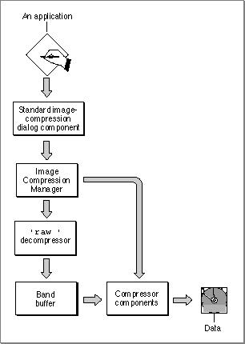
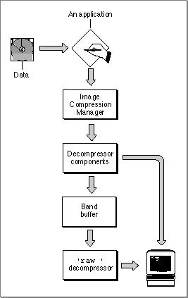

Compressing and Decompressing Still Images
QuickTime components allow your application to compress and decompress still images.Figure 1-3 provides an overview of QuickTime components for the compression and decompression of still images.
Figure 1-3 QuickTime components for compressing still images
- Your application calls the standard image-compression dialog component to select parameters for governing the compression of an image and for managing the compression operation.
- The standard image-compression dialog component calls the Image Compression Manager.
- The Image Compression Manager may commence the compression operation in one of two ways:
- It may send the image directly to an image compressor component and then to a storage media, such as a data pack.
- It may send the image to the Apple-supplied decompressor, the
'raw 'decompressor, and then through a band buffer (for conversion to the image depth required by the compressor component) before sending it to the image compressor component.- The compressor component compresses the image and sends it to the storage media.

Figure 1-4 shows the relationships of the components that allow your application to take an image from a storage media and decompress it so that it may be displayed on the Macintosh screen.
Figure 1-4 QuickTime components for decompressing still images
- Your application calls the QuickDraw
DrawPictureroutine, which the Image Compression Manager intercepts. The Image Compressor decompresses the image. Alternatively, your application may communicate directly with the Image Compression Manager, which sends the compressed image to the decompressor component.- The decompressor component sends the image directly to the Macintosh screen or to a band buffer that meets the requirements of the decompressor (in features such as pixel depth and dimension). The contents of the band buffer are then copied to the screen by the
'raw 'decompressor, which performs any necessary conversion.